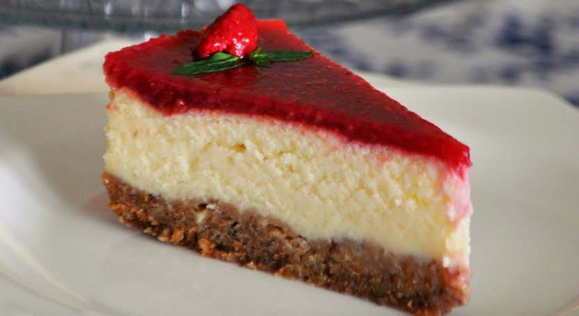

Kırmızı sosu ile iştah açan, görünümü ile herkesi büyüleyecek bir tarifimiz var! Frambuazlı cheesecake tarifi ile çay saatlerinizi şenlendirecek, cheesecake sevmeyenlere bile bu lezzeti sevdireceksiniz. Hazırlaması sizi biraz yoracak olsa da sonrasında çıkan şahane tatlı ile gözleriniz ve damaklarınız bayram edecek. Karşınızda yemelere doyamayacağınız tariflerimizden: Frambuazlı cheesecake tarifimiz.
Yulaflı bisküviler ile yumuşak bir altlık, krema ve labne ile sade bir harç hazırlıyoruz. Fırında uzun bir süre pişiriyoruz. Frambuaz ile hazırlanmış sosu da üzerine gezdirip, sofralarda baş köşeye kurulmayı hak eden bir tatlı ortaya çıkarıyoruz. Adeta bir sanat eseri görünümündeki yemelere doyum olmayacak frambuazlı cheesecake'niz hazır!
Sizi biraz bekletecek ama bir kaşığı ile yemelere doyamayacağınız tarifimiz için mutfağa geçin ve hemen hazırlıklara başlayın. Şimdiden ellerinize sağlık.
KAÇ KİŞİLİK
1 büyük tepsiHAZIRLAMA SÜRESİ
20 dakika PİŞİRME SÜRESİ
50 dakika
Frambuazlı Cheesecake Tarifi İçin Malzemeler:
Kreması İçin:
1 yemek kaşığı nişasta
3 adet yumurta
1 adet limon kabuğu rendesi(ve suyu)
1 su bardağı şeker
1 kutu sıvı krema
600 gram labne peyniri
1 paket vanilya
Tabanı İçin:
2 paket tam buğdaylı bisküvi
125 gram eritilmiş tereyağı
Sosu İçin:
1/2 su bardağı şeker
2 yemek kaşığı mısır nişastası
1 su bardağı su
1 paket vanilya
300 gram frambuaz
(donmuş ya da taze)
Frambuazlı Cheesecake Tarifi Nasıl Yapılır?
Kelepçeli kalıbın kenar duvarlarını kaplamak için yağlı kağıtları kesin. Tabanı ve kenarları margarin sürerek yağlı kağıt ile kaplayın.
Daha sonra kalıbın alt tabanını su geçmemesini sağlamak için alüminyum folyo ile kaplayın.
Frambuzları yarım su bardağı şeker ve bir bardak su ile karıştırıp buzdolabında beklemeye alın.
Pasta tabanı için 2 paket tam buğday unlu bisküviyi rondodan geçirin.
125 gram eritilmiş tereyağı üzerine ekleyip rondodan, bisküvilerle birlikte geçirin.
Hazırlamış olduğunuz kalıba bisküvili karışımı bir spatula ya da bardak ile iyice bastırarak yayın.
Pürüzsüz bir yüzey yaratmaya çalışın. Dinlenmesi için pasta tabanını kalıbıyla birlikte buzdolabında bekletin.
Cheesecake kreması için; 3 yumurta, 600 gram labne peynir, 1 su bardağı toz şeker, 1 kutu sıvı krema, 1 limon kabuğu rendesi ve suyu, 1 paket vanilya, 1 yemek kaşığı dolusu nişastayı bir kaba alın.
Mikserle pürüzsüz hale gelinceye kadar karıştırın.
Su ile doldurduğunuz derin bir fırın tepsisinin içine kalıbı yerleştirerek 25 dakika 180 derecede; 25-30 dakika da 150 derecede pişirin.
Daha sonra fırını kapatıp bir saat de fırın içinde bekletin. Bu şekilde cheesecake çatlamadan pişecektir.
Cheesecake dışarıda soğurken farmbuazlı sosu hazırlamaya başlayın. Dolaptan çıkardığınız frambuazları bir blender ile ezin.
Bir çay bardağı su ile 2 yemek kaşığı nişastayı bir kasede açın.
Tencereye ekleyin. Kısık ateşte karıştırarak pişirin.
Sosunuz yoğun bir kıvama gelince içine bir paket vanilya ekleyip, karıştırın ve soğumaya bırakın.
Cheesecake ve frambuaz sosu soğuyunca, cheesecake’in üzerine sosunu döküp buzdolabında 1 gece beklemeye alın.
Buzdolabından çıkardığınız cheesecake’i kalıbından çıkarıp taze ya da donmuş frambuazla ve nane yapraklarıyla süsleyerek servis edebilirsiniz. Afiyet olsun.